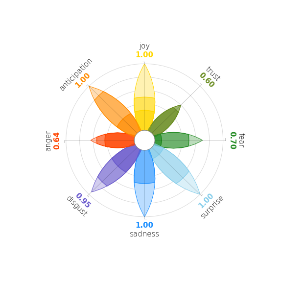
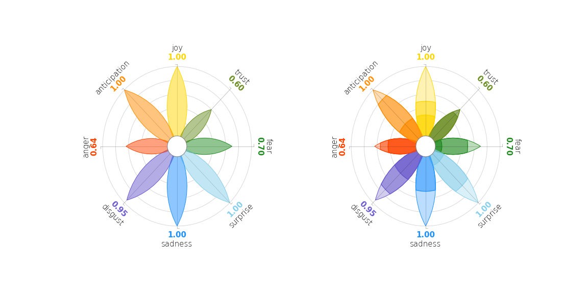
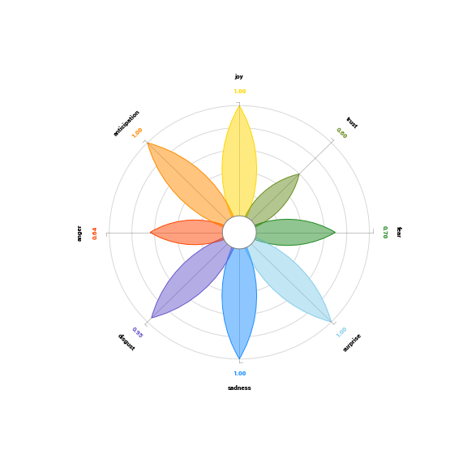
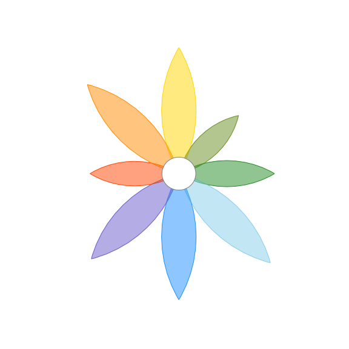
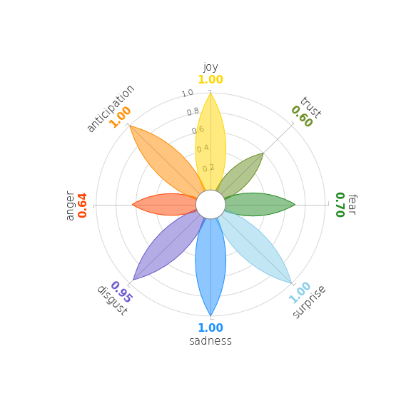
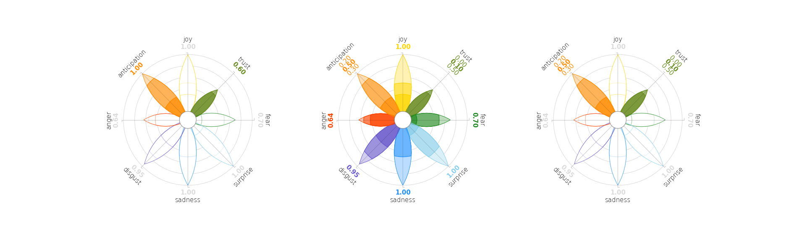
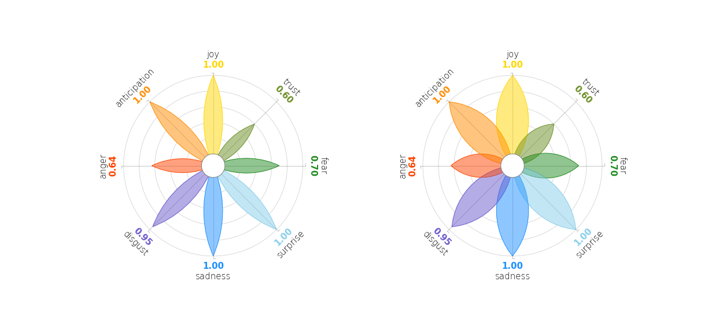
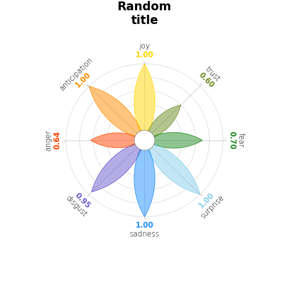
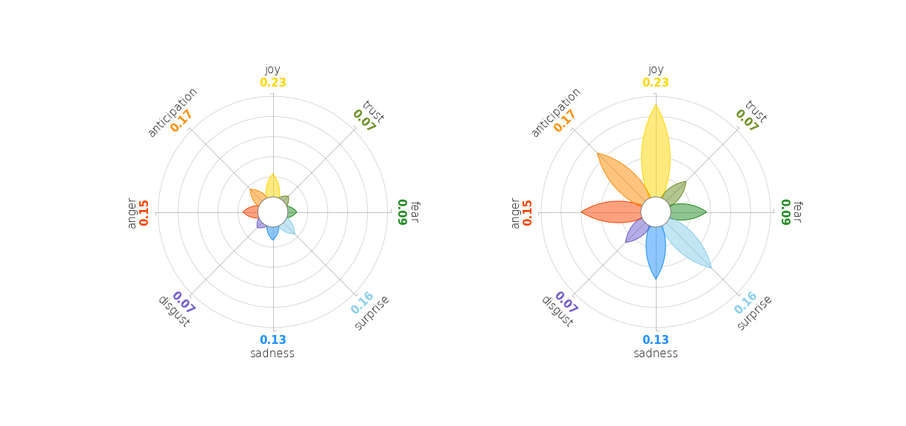

PyPlutchik is a Python module specifically designed for the visualisation of Plutchik’s wheel of emotions in texts or in corpora. PyPlutchik draws the Plutchik’s flower with each emotion petal sized after how much that emotion is detected or annotated in the corpus, also representing three degrees of intensity for each of them. PyPlutchik allows users to display also primary, secondary, tertiary and opposite dyads.
PyPlutchik is a small module with just one function:
pyplutchik.plutchik( scores, ax = None, font = None, fontweight = 'light', fontsize = 15, show_coordinates = True, show_ticklabels = False, highlight_emotions = 'all', show_intensity_labels = 'none', ticklabels_angle = 0, ticklabels_size = 11, height_width_ratio = 1, title = None, title_size = None, normalize = False ) It draws the Plutchik's wheel of emotion, with petals sized after the input parameter scores.
Parameters:
scores:
A dictionary with emotions or dyads. For each entry, values accepted are a 3-values iterable (for emotions only) or a scalar value between 0 and 1. The sum of the 3-values iterable values must not exceed 1, and no value should be negative.
⚠️ Emotions and dyads are mutually exclusive. Different kinds of dyads are mutually exclusive.
ax:
matplotlib.axes to draw the flower on. Default is None: a new ax will be created.
font:
Font of text. Default is sans-serif.
fontweight:
Font weight of text. Default is light.
fontsize:
Font size of text. Default is 15.
show_coordinates:
A boolean, wether to show polar coordinates or not.
show_ticklabels:
Boolean, wether to show tick labels under Joy petal. Default is False.
ticklabels_angle:
How much to rotate tick labels from y=0. Value should be given in radians. Default is 0.
highlight_emotions:
A string or a list of main emotions to highlight. If a list of emotions is given, other emotions will be shadowed. Default is 'all'.
show_intensity_labels:
A string or a list of main emotions. It shows all three intensity scores for each emotion in the list, and for the others cumulative scores. Default is 'none'.
ticklabels_size:
Size of tick labels. Default is 11.
height_width_ratio:
Ratio between height and width of the petal. Lower the ratio, thicker the petal. Default is 1.
title:
Title for the plot.
title_size:
Size of the title. Default is font_size.
normalize:
A numeric. It scales the the drawing area to a new value. If normalize = 0.5, for instance, petals with height 0.5 will touch the drawing area border. Default is False, no rescaling (drawing area spans from 0 to 1).
Returns:
ax:
The matplotlib.axes where the flower has been drawed on, for possible further customization.
Here it follows a gallery of examples, where it is showcased every pyplutchik's parameter. In each section, you will see a snippet of code and the plot it generates.
Basic usage
The simplest way to use pyplutchik is to plot a dict of values in the classic flower-shaped representation:
from pyplutchik import plutchik
emotions_simple = { 'joy': 1, 'trust': 0.6, 'fear': 0.7, 'surprise': 1, 'sadness': 1, 'disgust': 0.95, 'anger': 0.64, 'anticipation': 1 }
plutchik(emotions_simple) # scores = emotions_simpleEmotions can also be detailed in 3 degrees of intensity each:
from pyplutchik import plutchik
emotions_degrees = { 'joy': [0.3, 0.2, 0.5], 'trust': [0.5, 0.1, 0.0], 'fear': [0.1, 0.4, 0.2], 'surprise': [0.15, 0.5, 0.35], 'sadness': [0, 0.5, 0.5], 'disgust': [0.4, 0.33, 0.22], 'anger': [0.43, 0.12, 0.09], 'anticipation': [0.3, 0.5, 0.2] }
plutchik(emotions_degrees) # scores = emotions_degrees
Simple integration with matplotlib: ax
Subplot composition is responsibility of matplotlib. PyPlutchik can be used for plotting on a matplotlib.axes:
from pyplutchik import plutchikimport matplotlib.pyplot as plt
fig, ax = plt.subplots( nrows = 1, ncols = 2, figsize = (16, 8) )
plutchik(emotions_simple, ax[0])plutchik(emotions_degrees, ax[1])
Managing fonts: font, fontweight, fontsize
It is possible to use any font available in your system.
from pyplutchik import plutchik
plutchik(emotions_simple, font = 'Roboto', fontweight = 'bold', fontsize = 8)
Small-multi: show_coordinates
Ticks can be added in order to mark a visual reference, for an easier understanding of the petal length.
from pyplutchik import plutchik
plutchik(emotions_simple, show_coordinates = False)
This features comes handy when plotting small-multiples (here we just repeated the same flower over and over... you should change scores every time!)
from pyplutchik import plutchikimport matplotlib.pyplot as plt
fig, ax = plt.subplots( nrows = 4, ncols = 4, figsize = (20, 20) )
for i in range(16): plt.subplot(4, 4, i+1)
# change score every time... plutchik(emotions_simple, ax = plt.gca(), show_coordinates = False)
Zoom and focus: highlight_emotions, show_intensity_labels
Controlling what information to display about which emotion can be crucial to tell the right story. Here, with highlight_emotion you can decide to color only a subset of petals; with show_intensity_labels you can decide to show all the three degrees of intensity labels.
xxxxxxxxxxfrom pyplutchik import plutchikimport matplotlib.pyplot as plt
fig, ax = plt.subplots( nrows = 1, ncols = 3, figsize = (26, 8) )
plutchik(emotions_degrees, ax = ax[0], highlight_emotions = ['anticipation', 'trust'])plutchik(emotions_degrees, ax = ax[1], show_intensity_labels = ['anticipation', 'trust'])plutchik(emotions_degrees, ax = ax[2], highlight_emotions = ['anticipation', 'trust'], show_intensity_labels = ['anticipation', 'trust'])

Petal proportion: height_width_ratio
Do you like thinner petals? Or do you prefer thicker shapes?
xxxxxxxxxxfrom pyplutchik import plutchikimport matplotlib.pyplot as plt
fig, ax = plt.subplots( nrows = 1, ncols = 2, figsize = (17, 8) )
plutchik(emotions_simple, ax = ax[0], height_width_ratio = 1.3)plutchik(emotions_simple, ax = ax[1], height_width_ratio = 0.7)

Managing the title: title, title_size
How do we set a title to this plot?
xxxxxxxxxxfrom pyplutchik import plutchik
plutchik(emotions_simple, title = "Random\ntitle", title_size = 24)

Rescaling petal length: normalize
Unfortunately your emotion scores are very low: the highest score is 0.23! This will make your flower barely visible... unless you scale petal length on a new printable space, let's say from 0 to 0.25!
xxxxxxxxxxfrom pyplutchik import plutchikimport matplotlib.pyplot as plt
short_emotions = { 'joy': 0.23, 'trust': 0.07, 'fear': 0.09, 'surprise': 0.16, 'sadness': 0.13, 'disgust': 0.07, 'anger': 0.15, 'anticipation': 0.17 }
fig, ax = plt.subplots( nrows = 1, ncols = 2, figsize = (17, 8) )
plutchik(short_emotions, ax = ax[0])plutchik(short_emotions, ax = ax[1], normalize = 0.25)